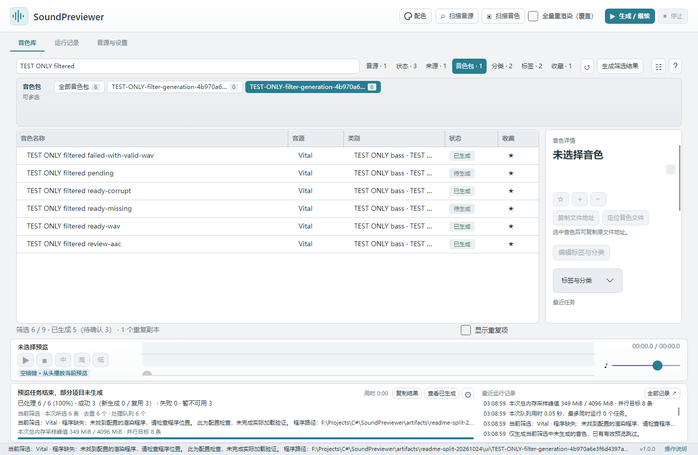

常见问题
本页内容：
先定位出错环节
- 扫描不到音源：在「音源与设置 → 目录」添加安装目录，重新扫描；在「已发现音源」选择版本并关联。详见音源配置。
- 扫描不到音色：确认添加的是音色所在文件夹，来源已启用，然后点击「扫描音色」。格式限制见支持范围。
- 无法生成：选中音色，查看右侧状态与最近任务描述；先修正具体原因，再只重做这一条。配置生成方式后按单音色测试核对。
- 生成后无法试听或声音不符：检查底部音量、系统输出、音源授权与资源；点击「中 / 高 / 低」分别核对，失败时保留结果描述。
- 更新后记录不见了：先保留新旧两个目录，按数据恢复核对位置，再决定是否导入旧库。
提示与处理方法
| 情况 | 处理方法 |
|---|---|
| 已配置音源，却提示暂不可用 | 查看任务结束汇总或对应音色的最近任务原因，按明确提示修正路径、版本、环境或格式问题；已有设置保留，无需盲目重新配置全部音源 |
| 启动时总显示旧库复制进度 | 已就位的 Preview 会直接打开；真正导入旧库、搬移目录或迁入旧音频时才显示迁移进度。如果每次仍重复出现，保留启动日志并反馈 |
| 音色因归属不明显示「无法预览」 | 在详情中核对并指定所属音源，再生成；不要按相似文件名猜测归属 |
| 旧 Vital 包内条目不能生成 | 先重新扫描，让新版检查内嵌资源；通过后可直接生成，未通过时按详情导出独立音色 |
| FXB 银行或 Spire 原生格式显示「无法预览」 | 当前只保留索引；FXB 可先在音源中导出独立音色，Spire 原生生成仍需后续开发 |
| 生成声音与目标不符 | 暂不确认，检查插件版本、授权、采样与波表路径；记录该音色和错误原因 |
| 不明白「加载防错检查」 | 它记录音源刚启动时的默认声音，避免加载失败后把默认声保存为目标音色；支持的生成方式会自动准备参照，通常无需手动操作 |
| 更新后看不到原记录 | 核对程序旁 Preview 与旧库迁移提示，保留旧数据库和原音频；不要先删除或覆盖任一目录 |
| 想用新模板重做试听 | 单独重新生成所选音色；勾选「全量重渲染（覆盖）」后只覆盖当前筛选范围，下次操作自动取消勾选 |
反馈问题
底部「复制结果」可复制本批完整汇总；选中音色后，详情中的「复制生成结果」会复制音色、来源、音源版本和最近任务描述。界面显示省略号不会截断复制内容；「全部记录」可查看完整日志。
反馈问题可提交到 GitHub Issues，附上程序版本、系统与架构、音源版本、所用文件格式和「运行记录」中的相关错误。无需上传商业插件、授权文件或完整私人音色库。
